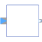
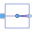

ComplexSIMOSingle Input Multiple Output continuous control block |

|
Information
This information is part of the Modelica Standard Library maintained by the Modelica Association.
Block has one continuous Complex input signal and a vector of continuous Complex output signals.
Parameters (2)
| nout |
Value: 1 Type: Integer Description: Number of outputs |
|---|---|
| useConjugateInput |
Value: false Type: Boolean Description: If true, input is processed conjugate complex |
Connectors (2)
| u |
Type: ComplexInput Description: Connector of Complex input signal |
|
|---|---|---|
| y |
Type: ComplexOutput[nout] Description: Connector of Complex output signals |
Components (1)
| uInternal |
Type: Complex Description: Equals either u or conjugate complex input u if useComplexInput = true |
|---|
Extended by (2)
|
Modelica.Electrical.QuasiStationary.MultiPhase.Blocks
Extends complex phase signal to complex multi phase signals using symmetricOrientation |
|
|  |
Modelica.ComplexBlocks.Routing
Signal replicator |